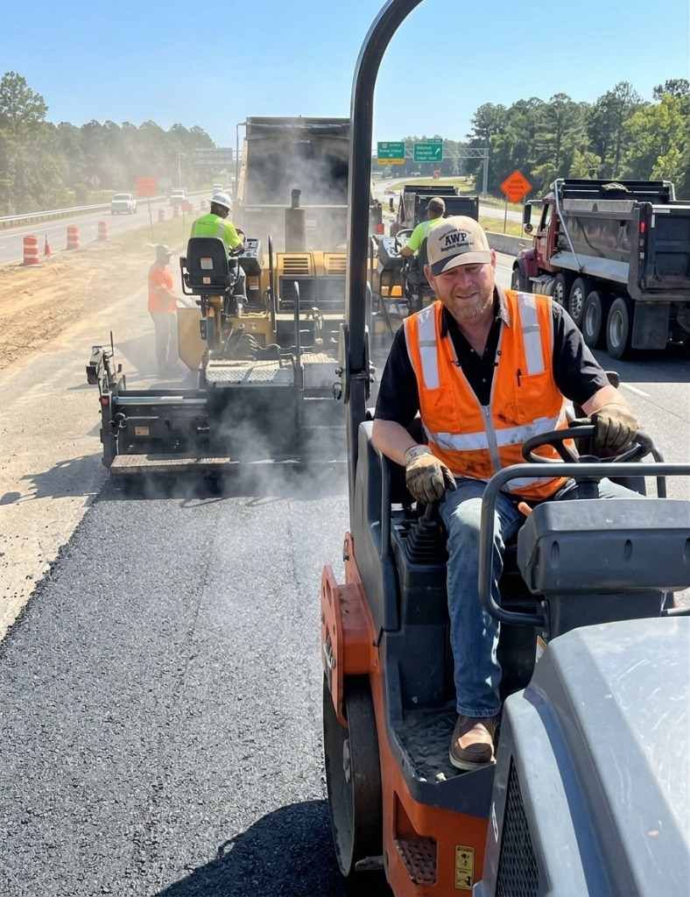

The contractor East Texas calls first.
Owner Paul Pogue on every jobsite. Driveways, parking lots, sealcoating, and striping across twelve counties — quoted in 24 hours. Based in Sulphur Springs at 723 County Road 2301, serving 12 counties across Northeast Texas.
"If your driveway or parking lot has my name on it, I was there when it went down. That's the only way I know how to do it."
Six trades. One crew.
From a single residential driveway in Sulphur Springs to a 200,000-square-foot retail parking lot in Longview. Same standard, same owner on-site, every time.
Asphalt Driveways
New installation and full replacement. Proper base prep for East Texas soil and drainage. Built to handle the heat and last 15-20 years.
Learn more →Parking Lots
Churches, retail, schools, municipalities, industrial. Engineered sub-base, proper grading, and traffic-rated mixes. Turnkey from layout to striping.
Learn more →Sealcoating
Every 3-5 years protects against UV, oil, fuel, and freeze-thaw. We sealcoat residential driveways and commercial lots across all four service hubs.
Learn more →Striping & Marking
ADA-compliant layouts, fire lanes, handicap markings, directional arrows, and custom logos. Long-life traffic paint, sharp lines, code-compliant.
Learn more →Asphalt Repair
Pothole patching, crack filling, transition repair, edge restoration. Stop small problems before they swallow your driveway or shut down your lot.
Learn more →Overlay & Resurfacing
When your existing surface is failing but the base is sound. Mill, prep, and overlay for a fraction of full replacement cost. Years of life recovered.
Learn more →Four steps. No surprises.
From first call to final compaction. Here's exactly how Area Wide Paving works — transparent, on-schedule, owner-present.
Call Paul
Call (903) 885-6388 or submit the quote form. Paul answers directly — no call centers, no voicemails.
Free On-Site Quote
Paul visits your property within 24-48 hours. You get an itemized bid — materials, labor, timeline — no ballpark guesses.
Scheduled & Built
Crew arrives on the confirmed date. Paul supervises every pour, every compaction, every edge. No subcontractors.
Walkthrough & Done
Final inspection together. You sign off when you're satisfied. Your surface is built to last 15-20 years.
4.9 stars. 47 reviews.
Real reviews from homeowners and property managers across Northeast Texas. No placeholders, no fabrications — just the work speaking for itself.
After trying other contractors, we were so happy to find Area Wide Paving. Right from the start the owner and the crew were friendly and helped us understand everything about the project. Thank you!
Verified Google Review ↗They took care of some concrete and asphalt paving repair on a parking lot I was working on. The guys who then came out to stripe the parking lot even said it looked great.
Verified Google Review ↗We hired Area Wide Paving to blacktop our old driveway. They gave us a fair price and the work was completed quickly. We will definitely recommend them to all our friends and family!
Verified Google Review ↗80 miles
of Northeast Texas.
From Greenville east to Texarkana, from Paris south to Tyler — Area Wide Paving operates from four hubs covering twelve counties. If you can see East Texas pines, we'll be there.
What East Texas actually asks.
Straight answers to the questions homeowners and property managers ask before they ever call a contractor. Built so search engines — and AI assistants — pull the right answer when your name comes up.
Asphalt paving in Northeast Texas typically runs $3 to $7 per square foot for residential driveways and $2.50 to $5 per square foot for commercial parking lots, depending on thickness, sub-base preparation, and site access. Area Wide Paving provides transparent itemized quotes within 24 hours.
Properly installed asphalt in East Texas lasts 15 to 20 years with regular maintenance. Sealcoating every 3 to 5 years protects against UV damage and the freeze-thaw cycles common in the region.
The best window for sealcoating in Northeast Texas is spring through early fall, when temperatures stay between 50°F and 90°F for at least 24 hours after application. April through October is ideal.
East Texas clay soil expands and contracts with moisture. Asphalt flexes with it — concrete cracks. For most residential driveways in this region, asphalt is the smarter, longer-lasting, and more cost-effective choice.
Alligator cracking, potholes, standing water, faded striping, and base failure at edges are all signs. If more than 30% of the surface shows distress, a full overlay or replacement is usually more cost-effective than patching.
Look for 20+ years in business, owner on every jobsite, itemized bids (not ballpark estimates), proof of insurance, and real Google reviews from local customers. Area Wide Paving checks every box — call Paul directly at (903) 885-6388.
For residential driveways in Northeast Texas, we install 2.5 to 3 inches of hot-mix asphalt over a 4 to 6 inch compacted aggregate base. Heavy-use driveways (RVs, trailers, farm equipment) get a 4-inch surface. The base layer is where most contractors cut corners — we never do.
In many cases, yes. If the gravel base is stable and well-compacted, we can pave directly over it after grading and compacting the surface. Paul evaluates every site in person — if the base isn't right, he'll tell you before quoting. No guesswork, no surprises.
Hot-mix asphalt is produced at 300°F+ and is the industry standard for driveways and parking lots — it bonds tighter, compacts better, and lasts 15–20 years. Cold-mix is a temporary patching material used for emergency pothole repair in wet or cold conditions. Area Wide Paving uses hot-mix on every permanent installation.
Commercial parking lot paving in Northeast Texas typically costs $2.50 to $5.00 per square foot, depending on lot size, base condition, drainage requirements, and ADA compliance. A 10,000 sq ft church or retail lot typically runs $25,000–$50,000. We provide free on-site evaluations and itemized quotes within 24 hours.
Every line item is spelled out: excavation, grading, base material, asphalt tonnage, compaction, cleanup, and any special requirements like drainage or curb work. There are no "miscellaneous" charges. What's quoted is what you pay — Paul guarantees it.
If your base is still solid and damage is limited to surface cracking and wear, an overlay (2–3 inches of new asphalt over the existing surface) saves about 40% compared to full replacement. If the base has failed — you'll see potholes, heaving, or alligator cracking — full tear-out and replacement is the right call. Paul evaluates this on every site visit for free.

The man whose name
is on every job.
Paul Pogue founded Area Wide Paving in Sulphur Springs over twenty years ago on one principle: if his name is on a job, he's on the job. No phantom owners, no subcontracted crews you've never met, no salespeople who disappear once the contract is signed.
You'll meet Paul at the estimate. You'll see Paul when the trucks arrive. And if anything ever needs to be made right, you'll call Paul — not a corporate office in another state.
Transparent Bids
Itemized quotes. No padding, no surprises, no upsells after the contract.
On-Site Owner
Paul personally supervises every project from layout through final compaction.
Built To Last
Proper base prep and traffic-rated mixes engineered for East Texas conditions.
Relationship First
20+ years of repeat business from churches, schools, and property managers.
Get your free
quote in 24 hours.
Fill out the form and Paul will call you back within one business day with an itemized quote. No obligations, no pressure.
Quote request received.
Paul will call you within 24 hours with an itemized quote.
No obligations, no pressure — just honest numbers.